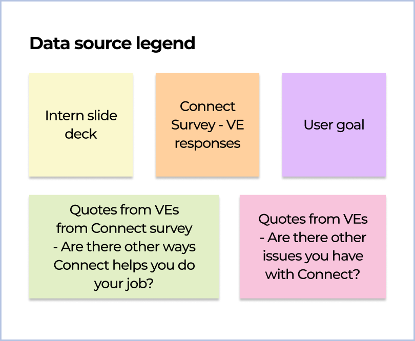

myAgro
3 months
UX Designer
4 UX designers, 1 UX researcher
I had the opportunity to join Autodesk’s Pro-bono program and work with myAgro as a pro-bono consultant, together with 3 UX designers and 1 UX researcher.
Thanks to teammates - Loren Guerriero, Nicole Karolczyk, Elise Lockwood, Julia Paganucci
Through an innovative mobile layaway model, myAgro helps farmers in Africa save for high-quality seeds, fertilizer, and other vital supplies to grow their incomes.
Increase the incomes of 1 million smallholder farmers by $1.50 a day by 2026, lifting them out of poverty.
The village entrepreneurs (VEs) are members of the local community and as part of myAgro’s field team, they earn commission for their work. They use the myAgro connect mobile app to enroll farmers, follow up on leads, track their progress, etc.
We compiled insights from several meetings with the myAgro leadership team, past intern’s slide deck, interview quotes and survey responses from VEs to create an affinity map which we used to eventually develop a user persona.

Primary target user of myAgro Connect App
To further synthesize our research, we took the sticky notes from our affinity map and mapped them onto applicable points on the app flow.

We added our own data points using heuristic evaluation and used the journey map to identify key areas of delight and key areas of opportunity.
We iterated on prototype designs using a similar approach to "Round Robin" where one designer started then passed it off to the second and so on to keep expanding and refining the designs.
We took inspiration from fitness and diet tracking apps and explored how dashboard layouts visually showed progress.
The myAgro team also contributed to the moodboard and annotated things they liked and/or disliked.
We also looked at how other apps simplified large data information and showed online / offline status.
We ran each iteration through the myAgro leadership team during our weekly shareouts and kept re-iterating. We used their feedback to inform our design decisions for higher fidelity prototypes which I was mainly in charge of.
VEs were used to red-amber-green color coding to represent how close they are to the target but we had to be careful with color so the app didn't demotivate users when they haven't reached any targets.
The offline / online status bar, although simple, was an integral part of the app. It needed to be noticeable but not distracting.
We needed to make sure the design didn’t break with long numbers that can reach millions and long French words, since the myAgro Connect users mostly speak French.
Some VEs aren’t really technology savvy, so they may not understand standard UX elements like the hamburger menu.
Some elements that weren’t clickable looked clickable such as the circles and checkmark on the 4th screen. Some designs were more attractive but not as legible as simpler designs.
We made some revisions for the final iteration based on the feedback we received from the myAgro team, which includes the following:
→
Incorporating more color contrast into the overall design
→
Auto-resize text depending on how many digits are added
→
Shrinking the connection status bar
→
Making the users current ranking more visually appealing
Prototype we used for testing, translated to French with the help of myAgro team
Our testing consisted of 1:1 interviews with 3 VEs. 1 VE had high phone literacy and is new to myAgro, while the other 2 was familiar with myAgro but had average to low phone literacy. App is also translated to French with help of myAgro. A few key takeaways after testing:
→
Although the add button had a somewhat similar pattern to social media apps that some VEs use, it didn’t translate as well as we thought it would
→
Instead of using the tabs to navigate, their first instinct was to click on the cards
→
Rankings not being clear enough - we simply added a badge illustration for this
Navigation and add button exploration that I was responsible for
Instead of having the add button fan out to 2 choices, we agreed on going with a primary (register customer) and secondary (add a new client) action button instead.
Cards act as shortcuts to pages, for example, when VEs click on “registered customers” they’ll be able to navigate directly to “village > registered customers” whereas if they clicked the “village” tab, it’ll show the first sub-tab, “potential clients” and they’ll have to click again to go to “registered customers”.